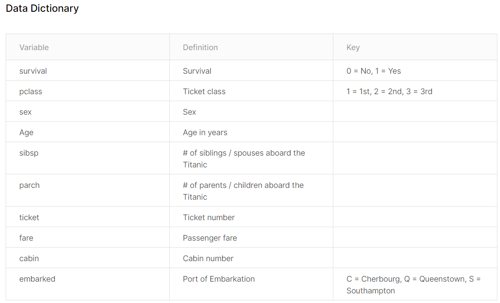

4.3 Data Attributes Assessment
After a brief assessment on the data quantity, we know that the both datasets are not too big in terms of both number records (891 and 418) and number of attributes (12 and 11). We also have an intuitive understand about the attributes, some obvious names like Name, Sex and Age; and some not so obvious names like SibSp and Parch.
4.3.1 General Attributes Description
Before we looking into individual attributes (single variate analysis) in our datasets, let us get some general sense of all attributes and make sure we understand each of them.
We knew that dataset test has 11 attributes and train has 12 attributes. The one attribute short is the Survived. The rest are the same. Let us look into those attributes, the following is from the Kaggel web site:

attribute Notes
*Pclass*: A proxy for socio-economic status (SES)
1st = Upper
2nd = Middle
3rd = Lower
*Age*: Age is fractional if less than 1. If the age is estimated, is it in the form of xx.5
*Sibsp*: The dataset defines family relations in this way...
*Sibling* = brother, sister, stepbrother, stepsister
*Spouse* = husband, wife (mistresses and fiancés were ignored)
*Parch*: The dataset defines family relations in this way...
Parent = mother, father
Child = daughter, son, stepdaughter, stepson
Some children travelled only with a nanny, therefore parch=0 for them.Just looking into these attributes’ description, a few thoughts are occurred:
- Attribute types
There are attributes should be categorical types. The values of those attributes can be any types but the importance is that they can classify the records into sets of similar groups and this grouping make sense to the problem to be solved. In Titanic datasets, attributes should have categorical type are: Survived, Sex, Embarked, and Pclass.
Other attribute perhaps should have numerical type. Thsi is because these attributes values change from record to record. They can be the values of discrete, continuous, or timeseries. One thing in common is that these values can be manipulated and applied with many math functions and plotting tools for visualization. In Titanic datasets, attributes should have numerical type are: Age, Fare, SibSp, Parch.
- Contribution to Survive
The final goal is to predict passenger’s survived or not. It makes sense to assess the prediction power of each attribute. which is the contribution of an attribute to attrribute Survived. In other words, the potential relationships among these attributes and with the attribute Survived need to be assessed. Here are some thoughts:
Pclass should somehow linked with Fare and Cabin. Generally, the higher the class is and the more expensive of the fare will be and the better cabin locations are. So those should have some sort of correlations among them. they together should have some affect on survive. You would think that the expensive ticket, means better cabin location and has privilege to escape first in the disaster.
What is the ticket number to do with survive? Is it just a random number? Or is associated with cabin? Or anything else like Port of embarkation? ticket number in some other systems could have more information rather than just an unique number.
Is the Fair in someways associated with journey length, which means the Port of embarkation and the port of disembarkation? Or cabin location and condition?
You can have other thoughts too. To prove or disprove these assumptions and thoughts, we need to look into the actual datasets at least to see:
- What are the data types for various attributes?
- Which attributes are available in the dataset?
- Which attributes are categorical?
- Which attributes are numerical?
- Which attributes are mixed data types?
- Any errors in the attributes values?
- Which features may contain errors or typos?
- Which features contain blank, null or empty values?
These questions will be answered in the following two sections.
4.3.2 Actual Attributes Types Examination
From figure 4.4, We can see that all the attributes have only three types, int, Factor, num.
Attributes have int types are: PassengerId, Survived, SibSp, Parch.
Attributes has Factor types are: Name, Sex, Ticket, Cabin and Embarked.
Attributes has num types are: Age and Fare.
We know that, the type int is for attribute that has an integer value; and num is for an numeric attribute, which has the values of real numbers.
Type Factor is R language’s way to say category type. It is a attribute that can take on one of a limited, and usually fixed, number of possible values, such as blood type.
Attributes types affect the operations we can apply on that attributes. In other words inappropriate types can prevent us to do proper analysis on that attribute. For example, it doe’s not make sense to calculate average on sex, so it is better to be with a type of Category, in R is a Factor. Similarly, Survived will have only two values 0 or 1, to represent death or live. It makes sense to be an factor too. Being a int type, it will prevent us to apply many methods that only works for a Factor type attribute.
So, looking into data attributes types, compare with the original meaning of each attributes can help us to spot any inappropriate types or wrong types.
Thinking:
Is Servived typed int approriate?
4.3.3 Actual Data Attributes Value Examination
To understand given datasets needs to carefully examine the values of each data attributes to:
- find any errors and missing values
- find value distribution
- find potential relation with the attribute to be predicted (also called dependent variable)
Finding errors, typos and missing values can set up the goals for data prepsocess.
Since the examine covers both datesets train and test, it make sense to combine the two datasets into one big dataset, so it can save us to run the same code twice on the different datasets.
Copy the following code into your script,
# Add a "Survived" attribute to the test dataset to allow for combining with train dataset
test <- data.frame(test[1], Survived = rep("NA", nrow(test)), test[ ,2:ncol(test)])
# Combine data sets. Append test.survived to train
data <- rbind(train, test)Now we have a dataset data, which combines both datasets train and test datasets. We assigned the value of attribute Survived in the original dataset test as “NA”. You can check them in the WorkSpace pane by click variable data.
Thinking:
- Can we combine
trainandtestwithout add Survived attribute to the test? Like,
data <- rbind(train, test)
- Why add attibute Survived as the second attribute? Can we add it as the first one? Like,
test <- data.frame(Survived = rep("NA", nrow(test)), test[,])
It is good idea to have bird eye’s view on our combined dataset.
## PassengerId Survived Pclass
## Min. : 1 Length:1309 Min. :1.000
## 1st Qu.: 328 Class :character 1st Qu.:2.000
## Median : 655 Mode :character Median :3.000
## Mean : 655 Mean :2.295
## 3rd Qu.: 982 3rd Qu.:3.000
## Max. :1309 Max. :3.000
##
## Name Sex Age
## Connolly, Miss. Kate : 2 female:466 Min. : 0.17
## Kelly, Mr. James : 2 male :843 1st Qu.:21.00
## Abbing, Mr. Anthony : 1 Median :28.00
## Abbott, Mr. Rossmore Edward : 1 Mean :29.88
## Abbott, Mrs. Stanton (Rosa Hunt): 1 3rd Qu.:39.00
## Abelson, Mr. Samuel : 1 Max. :80.00
## (Other) :1301 NA's :263
## SibSp Parch Ticket Fare
## Min. :0.0000 Min. :0.000 CA. 2343: 11 Min. : 0.000
## 1st Qu.:0.0000 1st Qu.:0.000 1601 : 8 1st Qu.: 7.896
## Median :0.0000 Median :0.000 CA 2144 : 8 Median : 14.454
## Mean :0.4989 Mean :0.385 3101295 : 7 Mean : 33.295
## 3rd Qu.:1.0000 3rd Qu.:0.000 347077 : 7 3rd Qu.: 31.275
## Max. :8.0000 Max. :9.000 347082 : 7 Max. :512.329
## (Other) :1261 NA's :1
## Cabin Embarked
## :1014 : 2
## C23 C25 C27 : 6 C:270
## B57 B59 B63 B66: 5 Q:123
## G6 : 5 S:914
## B96 B98 : 4
## C22 C26 : 4
## (Other) : 271This summary tell us a lot of information. Most obvious are:
- PassengerID is useless in terms of predicting survived or not. in addition, it is not much help that provide a statistical summary on it.
- Survived and Pclass numbers are useful and interesting.
- Name is mostly unique, which comes a surprise that only 2 names are repeated twice.
- Gender distribution among passenger is unbalanced that male overweight female.
- Age is interesting that minimum age 0.17 is alarming and there is 263 missing values.
- SibSp tells us the largest relatives travel together is 8.
- ParCh tells us the largest family travel together is 9.
- There are large number of ticket has the same number. The most repeat number is CA. 2343, which has 11 duplicates.
- Ticket Fare shows the minimum is 0, which is interesting that someone take a free ride. The maximum is over 512, which is far too expensive when the mean value is only about 33.
- Both Cabin and Embarked have values which can be identified and need more investigation.
You can see now one function can provide so much information. Quantitative summary is a great tool for a data scientist.
Now, Let us exam each attribute,
- PassengerID. PassengerId is an identifier, So only its uniqueness and missing value are considered.
There are many ways you can use to find out. I simply check its total number and its unique number. If the both equal to the number of records in the dataset, it shows that there is no duplication and no missing values in the attribute.
So we do,
## [1] 1309## [1] 1309The results shows the both number 1309, which is equal to the total number of records in the dataset. It proves the PassengerID has not missing value and duplication.
- Survived. Survived is the attribute that its value will be produced by a model for the dataset
test. It is called Consequencer in modeling contrast with other attributes. which are used to produce a prediction, are called Predictor. So, our exam will be conducted only on datasettrain. Again we can check the numbers whether they can add up or not. As we already mentioned that it makes sense to change the Servived from typechrintoFactor. We do,
##
## 0 1 NA
## 549 342 418The results proved that the Survived value has the correct numbers:
- 418 ‘NA’ values are the Survived’s value in the dataset
test, and - the 549 death and 342 survived, together maded up the total number of dataset
train, which is 891.
So we know the value of Survived in the dataset train are correct and has no missing values. It is interesting here to think about the survive rate. How to calculate?
I will do this,
# Calculate the survive rate in train data is 38% and the death rate is 61.61%
prop.table(table(as.factor(train$Survived)))##
## 0 1
## 0.6161616 0.3838384So we know the survive rate in the dataset train is about 61%. This is interesting because it reflects the overall survival rate.
- Pclass. Pclass is the feature which splits the passengers into three division namely class-1, class-2, class-3. As we understood it should be in type of
Factorrather thanint. We shall change its type first and then to see if there missing value or errors. It is also good to know the survival rate in each class. So. we can compare with the overall survival rate in the datasettrain.
Copy the following code into your script.
# Examine Pclass value,
# Look into Kaggle's explanation about Pclass: it is a proxy for social class i.e. rich or poor
# It should be factor and it does not make sense to stay in int.
data$Pclass <- as.factor(data$Pclass)
test$Pclass <- as.factor(test$Pclass)
train$Pclass <- as.factor(train$Pclass)
# Distribution across classes
table(data$Pclass)##
## 1 2 3
## 323 277 709If you want, you can check the total of the three classes which is 1309. It equals to the total number of records in the data (total number fo passenger). And there is no other numbers than 1,2 and 3. So we can conclude that there is no missing value and no errors in Pcalss.
It will be interesting to see the survival rate for each class,
##
## 0 1 NA
## 1 80 136 107
## 2 97 87 93
## 3 372 119 218These numbers tell us many things:
The death distribution. Among the three classes from class-1 to class-3 is: 80, 97 and 379. It confirms that the passenger in Class-3 has largest number of death (372);
The survival distribution. Among the three classes, class-1 has the highest number of survival (136);
The passengers distribution. Among the three classes, class-3 has the largest passenger numbers (372+119+218) in total, and overtaking other two classes together for both datasets
trainandtest(372+119) > ((80+97) + (136+87)).The last column is the pasenger distribution among the three glasses for dataset
test. This is because its Survived value is “NA” (not defined).
We can calculate distributions among the three classes in terms of percentage.
- The overall passenger’s distribution among the three classes:
# Calculate the distribution on Pclass
# Overall passenger distribution on classes.
prop.table(table(as.factor(data$Pclass)))##
## 1 2 3
## 0.2467532 0.2116119 0.5416348That is 24.67% passenger in Class-1, 21.16% passenger is class-2 and 54.16% of passenger in class-3.
- The passenger’s distribution among the three classes given by dataset
train:
##
## 1 2 3
## 0.2424242 0.2065095 0.5510662The number tells us the distribution of passengers from dataset train is: class-1, 24.24%; class-2, 20.65% and class-3 has 55.1%.
- The passenger’s distribution among the three classes given by dataset
test:
##
## 1 2 3
## 0.2559809 0.2224880 0.5215311Lastly, the passenger distribution from dataset test are: 25.6% in class-1, 22.24% in class-2 and 52.15% percent in class-3.
We can see that the distribution of passengers, in terms of percentage, among the three classes are almost identical both in order and in proportion. That is the most passenger are in class-3, then class-1 and finally class-2.
Let us look into death and survive distribution among the three classes2,
# Calculate death distribution across classes with Train data
SurviveOverClass <- table(train$Pclass, train$Survived)
# Convert SurviveOverClass into data frame
SoC.data.fram <- data.frame(SurviveOverClass)
# Retrieve death distribution in classes
Death.distribution.on.class <- SoC.data.fram$Freq[SoC.data.fram$Var2==0]
prop.table(Death.distribution.on.class)## [1] 0.1457195 0.1766849 0.6775956These numbers tell us the distribution of death among the three classes are: 14.57% death from class-1, 17.66% from class-2 and 67.75% death from class-3.
Similarly, we can calculate survive distribution among the three classes,
# calculate survive distribution among the three classes
Survive.distribution.on.class <- SoC.data.fram$Freq[SoC.data.fram$Var2==1]
prop.table(Survive.distribution.on.class)## [1] 0.3976608 0.2543860 0.3479532The results tell us that 39.76% of survived passenger are from class-1, and 25.43% from class-2, and 34.79% from class-3.
Let us thinking about this numbers. Class-3 has 55.1% of passenger distribution but has 34.79% passenger survival distribution. Clearly, the survive rate in class-3 is lower than other two classes. It is equivalent to say, the survival chances of a passenger who is in class-1 are higher than who is a class-2 and class-3.
Do it yourself:
Calculate the Survival rate among the three classes. What conclusion you have by compare them?Numbers are good to provide summary and test some assumptions. Analyzing given data by means of statistical summary and other numbering methods is called Descriptive analysis. See section ?? .
Perhaps, it is a good time to introduce Exploratory analysis, on the contrast with the Descriptive analysis, it uses graphical tools to explore the inside of given datasets.
To do so, we need to import some useful graphical tools provided by R community. We can then use them to plot Survived as an factor on Pclass numbers.
## Warning: package 'ggplot2' was built under R version 3.6.3ggplot(train, aes(x = Pclass, fill = factor(Survived))) +
geom_bar(width = 0.5) +
xlab("Pclass") +
ylab("Total Count") +
labs(fill = "Survived")Figure 4.5: Total count and survive rate of passenger on Pcalss.
Graph is better, isn’t it? It is very intuative.
Let’s briefly interpret this graph. The graph shown 4.5 tells us that the survive rate in Class-3 is the worst, and followed by class-2 and lastly, class-1. More people perished in the class-3 than any other two classes. It provides an important point that the chance of survive is associated with the social glass, if we can prove the Class-3 ticket is cheaper.
To sum up the analysis with Pclass, We have used both Descriptive analysis and Exploratory analysis. The results suggested that the Pclass has a strong relation with death rate. That is passengers in Class-3 have a higher chance of death. The correlation with social class (richer or poor) is waiting to be proved if the class-3 ticket is cheaper than others.
- Name. Name attribute by definition shows peoples’ name. It should not have any impact on passengers’ live and death. Never heard of someone was survived because one’s name! However we still need to asess its quality. Fir
Firstly, you may notice that the type of Name is a Factor, which is contradicted with the conventional understanding that name is a string or a list characters. Type chr would be more appropriate. Change its type to chr will help us to apply character functions to it and get it contents easily. Factor shows the uniqueness. it could help us to assess if there is missing value or duplicated values.
Notice that attribute Name only has 1307 levels (can be observed from the data structure on the WorkSpace pane). In addition, the data summary, see Figure ??, not only confirmed this but also identified the two shorts because of the value “Connolly, Miss. Kate” and “Kelly, Mr. James” have been repeated twice each.
Let us explore Name values in details.
Firstly, let us convert Name type into chr. Then we can check duplicated names using which function in R to get the duplicate names and store them into a vector dup.names. And echo them out.
# Convert Name type
data$Name <- as.character(data$Name)
# Find the two duplicate names
# First used which function to get the duplicate names and store them as a vector dup.names
# check it up ?which.
dup.names <- data[which(duplicated(data$Name)), "Name"]
# Echo out
dup.names## [1] "Kelly, Mr. James" "Connolly, Miss. Kate"Our code confirmed that the two duplicated names are indeed "“Kelly, Mr. James” and “Connolly, Miss. Kate”. It comes no surprise that the both names are pretty common in UK and USA.
One discovery though is that the names appeared has a title in it! Mr. is used in Kelly James and Miss. is used in Connolly Kate. This could be interesting. We can leave this for Preprocess to explore more. For the quality assessment it is mission accomplished.
- Sex. Sex attribute value aseessment is simple. It only has two values “male” and “female”. We could easily check if there are missing values and any errors.
# Retrial male and females. then check their numbers.
males <- data[which(data$Sex == "male"), ]
females <- data[which(data$Sex == "female"), ]
nrow(males)## [1] 843## [1] 466## [1] 1309It is obvious that there is no error and missing values.
It is also simple to explore the relationship between gender and the survival rate. We had an assumption that the male passengers have a high death rate. We plot tools in our disposal, let’s make use of it.
# plot death over sex
ggplot(data[1:891,], aes(x = Sex, fill = Survived)) +
geom_bar() +
xlab("Sex") +
ylab("Total Count") +
labs(fill = "Survived")Figure 4.6: Total count and survive rate of passenger on sex.
The graph shows that the male death rate is much higher than female passengers.
- Age. To examine attribute Age, we do this,
## Min. 1st Qu. Median Mean 3rd Qu. Max. NA's
## 0.17 21.00 28.00 29.88 39.00 80.00 263## Min. 1st Qu. Median Mean 3rd Qu. Max. NA's
## 0.42 20.12 28.00 29.70 38.00 80.00 177## Min. 1st Qu. Median Mean 3rd Qu. Max. NA's
## 0.17 21.00 27.00 30.27 39.00 76.00 86It is obvious that Age has many problems:
1. Age has decimal point. It is a surprise. not sure it is a mistake.
2. there are large number of missing values: 177 missing value in dataset train and 86 missing value in dataset test, in total of 263, which count as 263/1309 = 20%.
However, we still could have a brief assessment on its impact on survive rate, despict the 177 missing values.
ggplot(data[1:891,], aes(x = Age, fill = Survived)) +
geom_histogram(binwidth = 10) +
xlab("Age") +
ylab("Total Count")## Warning: Removed 177 rows containing non-finite values (stat_bin).Figure 4.7: Survive rate of passenger on age.
The graph shows the relationship between Age and survival rate. It becomes apparent that age group between 15 and 25 has the worst survival rate. It is also interesting to know that there are some age has values less than 0!
Therefore, we could conclude that.
The attribute Age has a serious quality problem: some age values are negtive and large number 177 values are missing. If it is to be used as a predictor in our model for prediction, it needs a lot of work in the stage of preprocess.
- SibSp and ParCh. To examine attribute Age, we do this,
#plot the 3-way relationship of sex, pclass, and survival ggplot(data[1:891,], aes(x = Sex, fill = Survived)) + geom_bar() + facet_wrap(~Pclass) + ggtitle(“Pclass”) + xlab(“Sex”) + ylab(“Total Count”) + labs(fill = “Survived”)
This code is not brilliant. It used many intermediate variables, you can check their structure and contents from WorkSpace pane. You can come up with a better code.↩︎